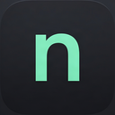

:3000↳meu-saas / server.jsA porta tem dono.
Busque por pasta, comando, PID ou porta. Encontre processos mesmo quando não estão no seu registry.

node-processorMenos processos perdidos. Mais controle.
Dezenas de node.exe. Qual deles é seu projeto? Veja a pasta, a porta e a memória de cada processo. Encerre o que ficou para trás.
Windows 10 / 11 · x64 · Instalador .exe
:5173128 MB:3000284 MB:800096 MBPrévia ilustrativa · a lista real depende da sua máquina
O contexto que faltava
O nome do executável conta só uma parte. Veja o projeto por trás dele antes de decidir.
:3000↳meu-saas / server.jsBusque por pasta, comando, PID ou porta. Encontre processos mesmo quando não estão no seu registry.
Agrupe por projeto e compare CPU e memória. Os comandos repetidos aparecem sinalizados na lista.
Confira a seleção antes de encerrar. Proteja processos importantes e consulte o histórico das ações.
Uma olhada no app
Uma apresentação visual da interface: processos por projeto, consumo de memória e indicação de duplicados.
Fica perto. Sai da frente.
Abra quando precisar. Ao fechar a janela, o node-processor continua disponível na bandeja do Windows.
O instalador configura a abertura na bandeja ao entrar na sua conta. Você pode desativar em Aplicativos de Inicialização do Windows.
Abra a pasta, o terminal ou a porta no navegador. Leia o log dos processos registrados sem sair do app.
O consultor local sugere uma limpeza sem exigir chave de IA. Provedores externos são opcionais e configurados por você.
Pronto para organizar a casa?
Instalador para Windows, com ícone, atalhos e inicialização automática. O botão oferece a versão mais recente disponível.
Baixar instalador .exeWindows 10 / 11 · x64
Consultar SHA-256 do instalador ↗Salve o arquivo node-processor-setup.exe no seu computador.
Instale na sua conta do Windows. O assistente prepara o aplicativo e os atalhos.
Depois de reiniciar, encontre o ícone ao lado do relógio. Use “Sair” no menu para encerrar o app.
Dúvidas rápidas
Não. O app também faz uma varredura dos processos do sistema. O registry acrescenta contexto, como pasta e caminho do log, quando está disponível.
Não. Você seleciona e confirma as ações. As sugestões do consultor não executam uma limpeza automática.
Volte a esta página e baixe o instalador. O download acompanha a última versão publicada; a atualização do aplicativo é feita executando o novo instalador.
O instalador configura a abertura na bandeja quando você entra no Windows. Para mudar isso, use Configurações → Aplicativos → Inicialização. Para sair agora, use o menu do ícone ao lado do relógio.
O modo local funciona sem enviar dados a um provedor de IA. Se você configurar OpenAI ou OpenRouter, o inventário de processos é enviado ao provedor escolhido para análise.
Esta distribuição não tem assinatura digital de editor. O Windows pode mostrar um aviso de reputação. Confira a origem do download e o SHA-256 antes de decidir executar.